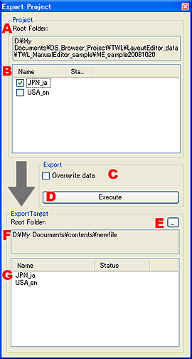

|

|
- ルートフォルダ。
編集中のプロジェクトのルートフォルダのパスを表示します。
- 言語フォルダの選択。
プロジェクトに含まれる言語フォルダが表示されています。
エクスポートしたい言語をチェックして選択します。
- データを上書きする。
チェックボックスにチェックを入れると、エクスポート先に既に同じ言語フォルダが含まれている場合、重複ファイルを上書きします。
チェックが入っていない時は、重複ファイルは上書きせずにスキップします。
- エクスポートの実行。
設定した内容で、エクスポートを実行します。
- エクスポート先の選択。
エクスポート先のフォルダを選択します。
- エクスポート先のルート。
選択したエクスポート先フォルダのルートを表示します。
- エクスポート先フォルダの内容。
選択したフォルダ内に、既に言語フォルダが含まれてる場合、表示されます。
|